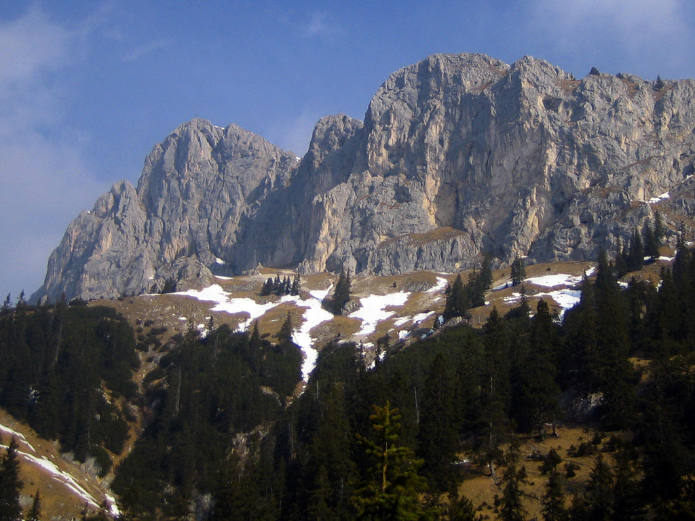
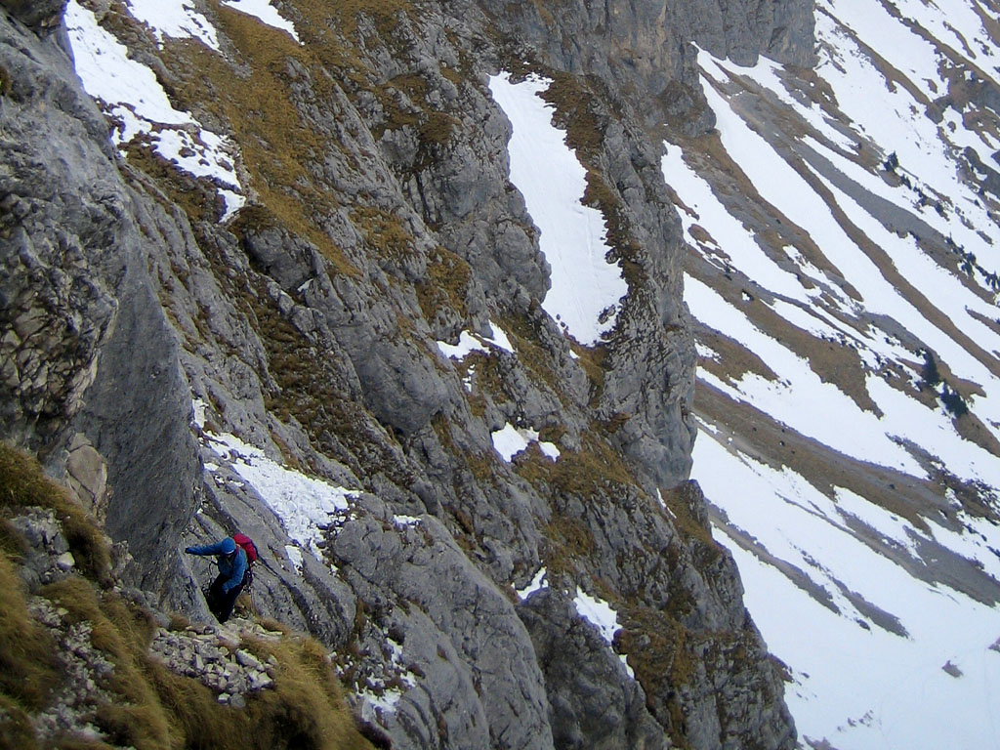
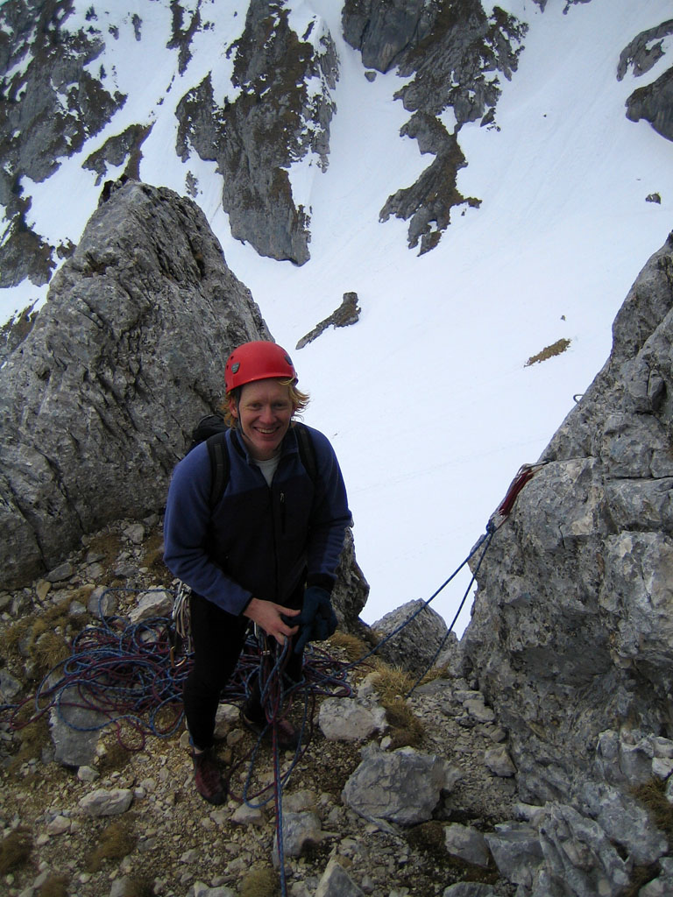
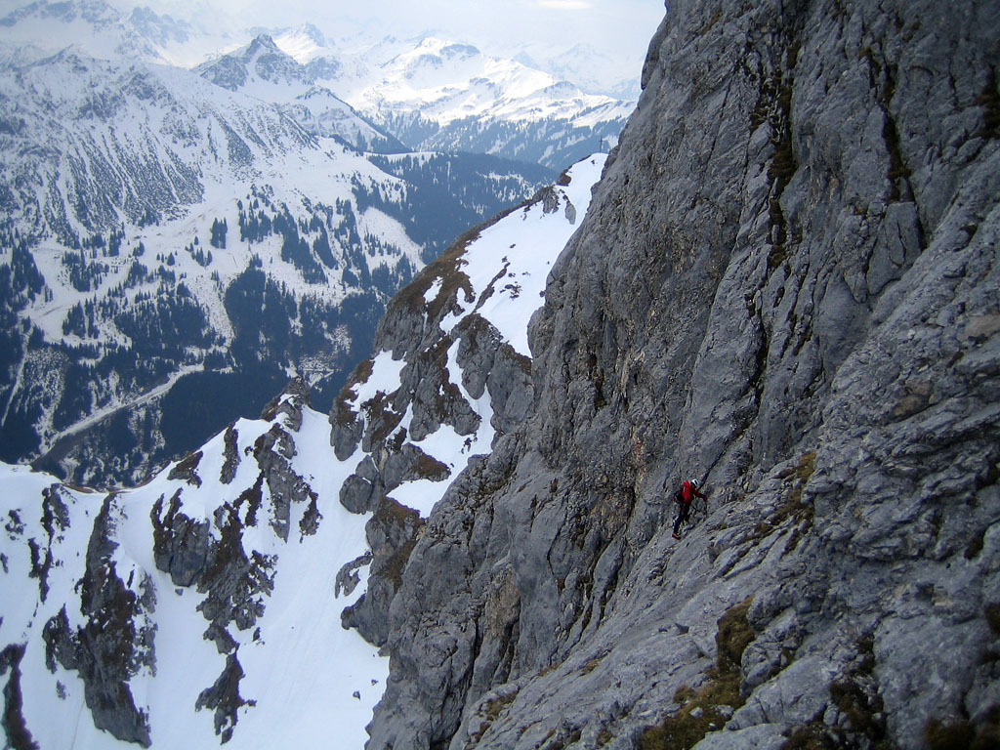
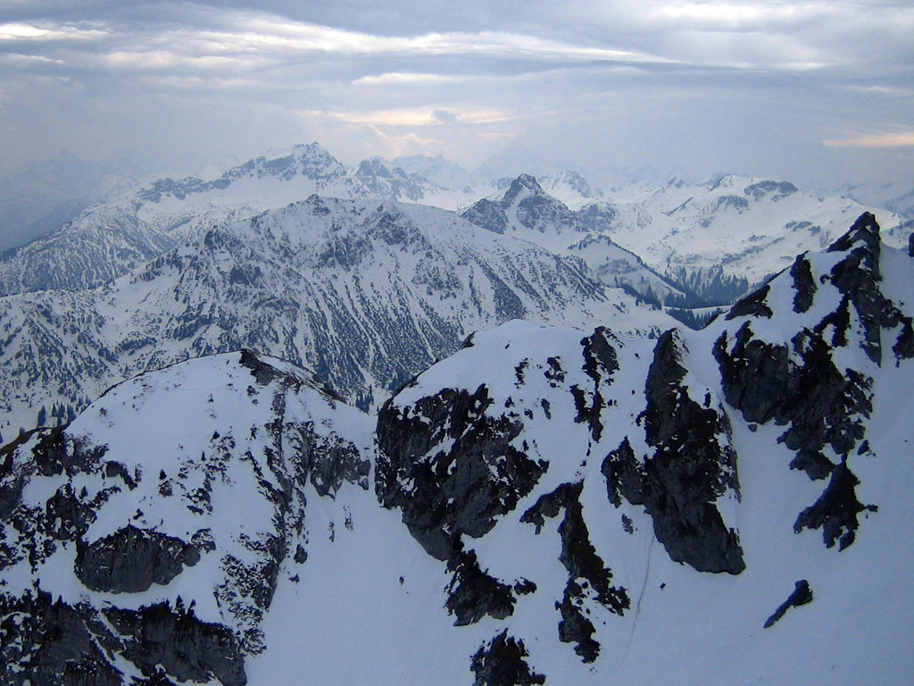
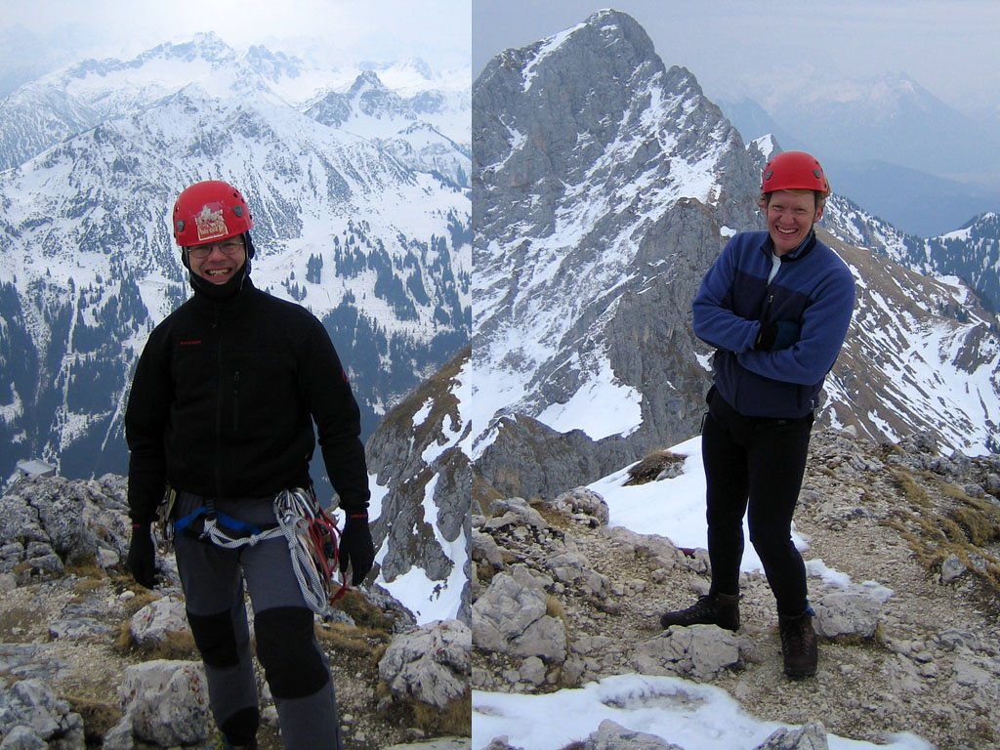

Gimpel Suedostkamin
Suedostkamin (Southeast Chimney) Route
Have you ever sat in the office, when it’s sunny outside, dreaming of climbing warm rock in the sun? Great weather during the week got ahold of me and wouldn’t let go. Though the forecast worsened for Saturday, I downplayed the difficulties. What’s a little wind?
Daniel came staggering by, just a few hours off a flight from London, but game to go if I drive. It would be our first visit to the Allgaeu Mountains, specifically the Tannheimer Valley. Here, in the Northern Alps not far from the famous Neuschwanstein Castle, there are rugged limestone peaks reminiscent of the Dolomites. And because the peaks are fairly low, you could rock climb on a sunny winters day. That was exactly what we wanted!
Friday I told a coworker about our plan: “We are going to a valley called the Tannheimertal, in a region of the mountains known as…the Allgaeu.” He started laughing. It was strange to hear the area where he grew up described in such mysterious tones.
We drove to the valley through the neighboring Ammergau mountains, reaching the village of Nesselwaengle in 2 hours drive from Munich. Our first goal was a huge “hut” called the Gimpelhaus which boasted of a commanding view of the valley, and even a bouldering room for rained-out climbers. To reach the hut it’s a very steep 1700 foot climb which took us a full hour laboring up with ropes and gear. A couple of guys had pitched their tent on the veranda, and were getting ready to head to the walls. We had a great view of the Hochwiesler which really looked like the Dolomites. we were wearing short-sleeves and enjoying the sun. After a short hike through snow northeast on a little trail, we entered a valley dominated by the Rote Flueh, the Gimpel, and other peaks with steep walls.
However, as we entered, the sunny aspect of the whole region changed abruptly with a windy whallop of frigid air. The sky darkened, and each successive blast made us regret our quasi-summer attire. Now we struggled in deep snow, wondering why gaitors seemed like too much weight to carry! As I punched through to my knees for the 10th time, I saw Daniel riffling through his pack for a jacket. We followed old tracks in the snow up to the base of cliffs as a hiking party bound for Rote Flueh crossed beneath. Cursing at the snow in our boots and now constant blasts of wind, we found what might be the route where a metal plaque marked a long-ago tragedy. Scrambling up through steep snow and then rock, we found we were too far left, and this was actually the Alte Suedwand. It seems like a good route, but too easy for us today at rock grade III, or so I confidently asserted. We sought the Neue Suedostkante, a bolt-protected climb offering 5 grade VI pitches in it’s 10 pitch length. I became excited about it after seeing a picture in a guidebook of a climber navigating the “Belly Wall” (//Bauchige Wand//) on the 5th pitch. Daniel had never climbed grade VI outside, so he was a bit leery. I put on my weatherbeaten face and thousand-yard stare: “oh, we’ll get up it alright.”
It took another 30 minutes of falling into snow holes and scrambling up walls to be sure we had the right route. We awkwardly switched into rock shoes and flaked out the rope, trying to get started before we got too cold. Another party in full winter kit stomped up the valley below.
“Does it make sense to do this route now that it’s so cold?” asked Daniel reasonably.
“Well…as long as we keep moving, and I think it’s less windy higher up,” I asserted. This was based on the specious reasoning that the wind died for a moment while I was standing 5 meters higher on the cliff searching for the route, and didn’t start again until I climbed down!
We found an idea we were both comfortable with: “From every pitch we could rappel, plus if it stays cold and windy we can diverge onto the Suedostkamin at half-height, which is one pitch shorter and much easier at grade IV.”
Daniel gamely set out for the first lead, which was steep. Exposed to the wind, I realized we’d definitely have to diverge to the easier route, if we made it that far…it was just too cold. Following the pitch, my fingers were a little numb, and feet felt clumsy. Still, it was nice climbing, and nice to get above the snow to dry rock. Wanting to warm up, I set off on an easier pitch to the base of the first grade V (approx YDS 5.7) pitch. Daniel came up and belayed me out for it. This would be a test…if the grade V section was too hard in the cold, we rappel. But in fact it was very enjoyable!
You traverse a wall to the left with thin flakes for hands. I pasted my feet on small holds, then made a big step to cross the blank section. Clipping a bolt on the other side, I went straight up a steep, rotting crest. 20 feet up and wondering where the next bolt is, I realized I’d made a wrong turn: the route was in the gully on my left. Getting there was made difficult because of severe rope drag. After a mighty struggle, I was oriented in the gully and clipped to a bolt. Lots of reefing and whipping on the line combined with my small store of German curse words managed to free the rope from the snag on the ridge that caused the drag.
Daniel came up easily, happy to have climbed his first grade V pitch in the mountains. But he had gotten really cold at the belay. We could see the “Belly Wall” directly above, the first grade VI pitch. But alas, it was too cold to go that way. Two guys were climbing the chimney, one pitch below our level. They were properly outfitted for a winter climb, with shells and warm boots. we took a picture of one of them at a belay.
To warm up, Daniel led up quickly, traversing right on a grassy ramp at the base of the Belly Wall. After a time he called for me to follow and I scrambled up, curious as to why I couldn’t feel a thing in my left foot. I followed the goat ramp, grabbed the gear from Daniel, then continued to the right in search of the chimney. It was hard to tell if I was in the chimney or on the “guide’s route” which should be to the left. The terrain was very easy (grade II-III), and I passed a belay station to see how far I could get. I ended up belaying from a scrub tree at a wide spot in the chimney after a full 60 meters. Daniel arrived and I changed into my boots, having failed to warm my foot up. “Okay, roughly 4 pitches of grade III-IV to the top, let’s just go” we agreed. The cold was tiring. Normally we take lots of pictures, but for this whole climb we only had 4. It was actually painful to consider getting out the camera and all the standing in the wind snapping a photo would require.
Daniel led up and up, for a full 60 meter pitch. Following, I came to a constriction in the chimney that was pretty hard in boots. Higher, I found him at an uncomfortable hanging belay of a bolt and maybe a sling. I had to laugh because 15 feet below was a luxurious 2 bolt belay station. “Where!” said Daniel. Somehow the bolts were very well camouflaged to us on this wall! Must be the angle of the high clouds to the sun. Plus the d**m wind! I carefully tiptoed around him on small holds. “Aren’t you putting on your rock shoes?” he said. “No,” I said loftily, “an alpine climber must always be able to climb grade IV in boots.” Actually the real reason was I didn’t want to lose feeling in my foot again!
I came to a belay station and started to clip in, but the thought of Daniel hanging awkwardly below combined with the more personal thought of me standing around for 20 minutes convinced me to try for the summit. An entertaining hard move reminded me to be careful, and then fighting rope drag, I came to a rappel station on the summit ridge. “Last belay in the wind” I croaked. Daniel appeared with a hearty “hey Michael!” He was also pleased to be finished with the climb. Straddling the ridge crest, we quickly put the ropes away and scrambled the 10 meters to the summit. A truly awful blast of wind convinced us not to linger, and as the other two guys appeared below on the face we took a picture of them and waved goodbye.
One side of the ridge was steep grass covered in snow or ice, the other side was a vertical cliff. We balanced down slowly in violent gusts of wind and blowing snow. At one point we found a rappel anchor and used it to get over an especially icy, slabby section. Lower down, Daniel cursed at the way his sneakers slipped on the ice. Eventually we reached a saddle where we could descend mostly snowfree rock and scree on the south side. We downclimbed a couple of steep sections, though a rappel anchor was available.
I stomped over to the base of the route and got Daniel’s pack. The other guys caught up to us, and we agreed to exchange email addresses at the Gimpelhaus. We didn’t get any pictures of ourselves, but we did get them in some nice wintery-looking climbing shots. Lower down, two more guys appeared and we all discussed what we’d done that day. We went back to the Gimpelhaus, and as it turns out, they had carried up a keg of good German beer! Now that summer had retreated and winter was back, the temperature of the beer was just right. They had climbed on the Hochwiesler the day before in warm sun and t-shirts. We bid farewell and started down. On the way home we drove by the Neuschwanstein Castle, looking cold and regal in the sunset.
|
 Looking up to the Hochwiesler |
|
 A climber belaying in the wind |
|
 Michael at a cold belay |
|
 A climber belaying on the last pitch |
|
 Allgaeu peaks to the south |
|
 Freezing on the summit! |
{kind=link}
{kind=link}
{kind=link}
{kind=link}
{kind=link}
{kind=link}